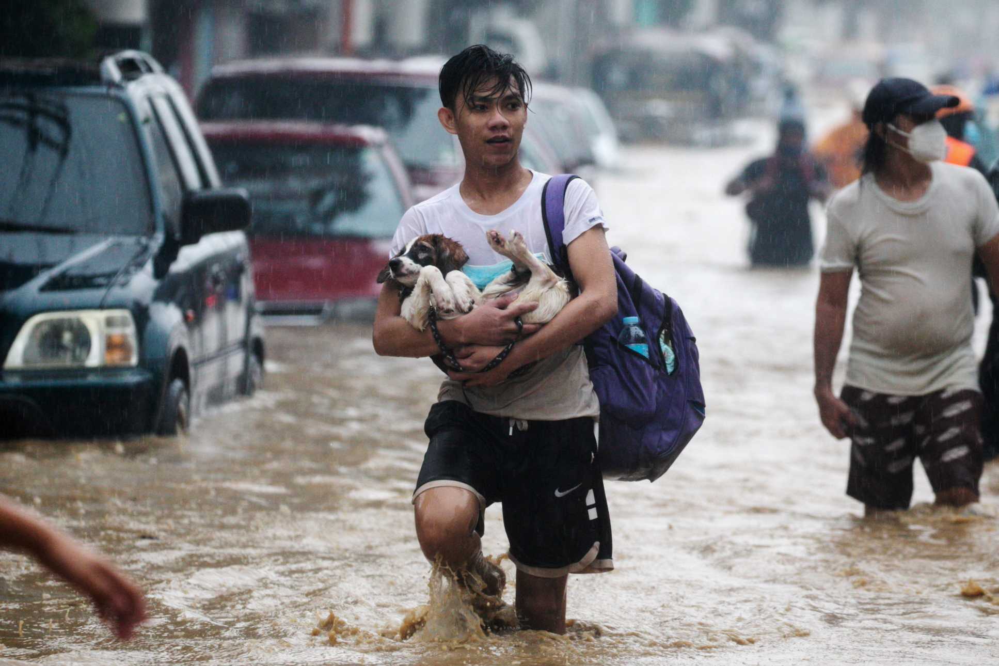

As most people know, 2 typhoons have strucked the Philippines recently called the typhoon Rolly and Ulysses.These typhoon have hit bicol and other regions and was considered one of the strongest typhoons.Both typhoons have brought destructive winds and heavy rain toward marinduque province to cavite. While Ulysses caused heavy rain and flooding affecting online classes to suspend. People have said that Typhoon Ulysses brought massive fear to themselves. People have slept on rooftops and many poor animals have been found dead afterwards. As scary as it might have been, people were found dead floating in the flood.
As of now, many parts of the Philippines are still recovering with the whole situation. Some started to evacuate while others chose to stay in their homes. Many have lost their homes, belongings, and even their loved ones. Because of this, many people decided to help. Imagine all those lives we have lost because of the typhoon. Imagine this might be you who need help. We are one country who help the lives of others because we are the only one here for each other. ''bayanihan''.